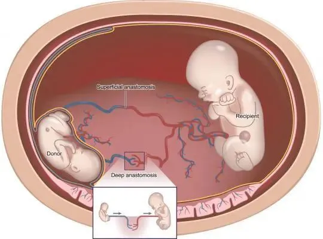
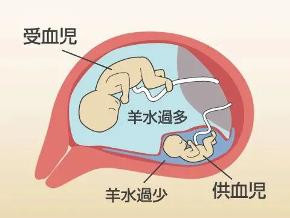
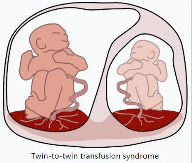
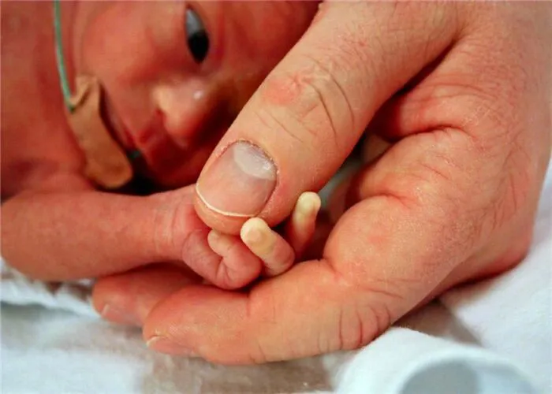

孖仔帮
公众号ID：twinsbang
关注
文|双胞胎姐妹花妈妈@xxliang
网图|侵删
【帮主】圆圈妈妈：上帝把“足月分娩，母婴同室”洒满人间，唯独我撑了把伞。
这是孖仔帮双胎专栏【孖妈来了】的第10篇文章，是一位刚生下一对双胞胎姐妹花，还在坐月子的双胞胎妈妈分享的故事，写的是她孕后期被确诊双胞胎输血综合征后不得不紧急剖腹产的经历。
据说双输好发于孕中期，所以当年孕22周顺利通过四维大排畸后，我就开始嘚瑟了，对TTTs没刚开始那么忌惮，心想着都已经5个多月了，孕期过去一大半，离卸货的日子也越来越近了，即便真出现TTTs，熬一熬也能存活吧。
现在想想，真为自己的无知捏把冷汗，还好是有惊无险，建群这么久见过那么多双输案例，得出的结论就是：双胎妊娠，特别是单绒单羊和单绒双羊，任何时候都不能松懈，只有生出来把俩娃捧在手心上，看着他们安静地在怀里喝奶才是最稳妥的，最实在的，最安全的，才算是真正意义上的“母子平安”。

双胞胎姐妹花妈妈@xxliang：
40周预产期是8月22日，37周预产期是8月1日，而我，却在2020年6月9日，因单绒双羊的双胎输血综合症导致一胎羊水尽无，胎心变弱，被紧急剖腹产了。
胎龄29周，大娃790克，小娃1050克，一出世就被医院下了危重通知书，直至今天，我仍然一眼都没见到我的两个娃，只是在剖腹时听到那几声微弱的哭声。
孕中期，我就曾因宫缩频繁而住院，住院期间查出一胎羊水81，一胎羊水42，出院时被医生提醒有双胎输血综合征的风险。
当时我就怕哭了，一边办出院手续，一边止不住地流泪，孕初期我就查了许多关于单绒双羊的资料，知道双输的预后并不好，我很害怕自己会保不住肚子里的两个娃。
一周后复查b超，一胎羊水87，另一胎羊水45，接着25周+b超时，一胎羊水已经到了100，另一胎羊水66。

随着羊水的增加，我开始吃不下东西，每到饭时吃两三口就会饱了，但肚子却涨得飞快，腰部腹部都感到非常不舒服。
但到27周+时，两个娃的羊水又变回正常值，我还因此而感到十分开心，心想即将到孕晚期了，双输风险应该也会降低吧。
然而，冥冥之中该来的还是会来，我躲不掉，也逃不开。2020年6月6日，即将踏入29周的我因每5分钟一次的频繁宫缩住院了。
6月7日，住院时b超发现一胎羊水116，一胎羊水16，两娃生长差距扩大，脐血流异常，被确诊为双胎输血综合征，一胎为受血儿，一胎为供血儿。

市人民医院立刻用救护车将我送到了广东省妇幼保健院番禺院区。当晚，我辗转反侧难以入眠，总是忍不住反复确认胎动，不知是不是心理作用，总感觉不到供血儿的胎动，我立马不淡定了，赶紧跑到护士站叫护士帮忙做胎监，待确定胎儿心率正常我才敢小睡片刻。
6月8日b超，羊水差距进一步扩大，一胎羊水130，另一胎羊水只有11，因为羊水过多，腰部腹部异常难受，就在当天，医生给我做了羊水穿刺和抽羊水，抽出2200ml的羊水，让我感觉身体顿然舒缓了不少。
本以为受尽磨难，应该能再坚持多一两周，让我的两个娃再长大一点，哪怕是能多长50克也好呀！然而，愿望最终也仅能成为奢望。
6月9日，住院医生查房，我跟住院医生说我几乎感觉不到供血儿的胎动了，一个小时内一次胎动都感觉不到，医生立马给我安排了紧急b超，B超显示羊水尽无，于是开始不间断的胎监，此时胎心还算正常。
医生找我老公谈话，问要不要立刻剖，我老公认为可以熬过这一晚，虽然早上b超说羊水几乎没有，但当时诊断的主任医生说可以看明天的三级b超再决定，于是他就安慰我说没事的，等明天做完三级b超再决定是否提前剖。
老公离开病房后，住院医生来看我，说我胎心不好了，问我要不要剖，若不剖，供血儿今晚随时都有可能胎停。
我吓哭了，心里还祈求着有转机：“怎么我老公跟你说的不一样？他不是这样说的，他说能熬过今晚的。”
住院医生也很无奈：“你也是成年人，我现在直接告诉你，供血儿的胎心已经开始不好了，也许能熬过今晚，但也有可能随时都没有了，你究竟还要不要这个娃？”

我全身开始颤抖，哭着打电话给老公：“医生说大娃胎心不好了，可能撑不过今晚，你还要不要大娃了？你究竟还要不要？”老公电话还没挂，急忙开车掉头往医院赶。
等不及他回来签家属同意书，甚至连我身上的项链都来不及摘下，此时此刻，时间就是生命。手术室为了我推掉了一台原本要做的手术，优先给我安排了手术。
就这样，我被推了进去，身边没有一个亲人在场，我全程颤抖着，身体颤抖着，大脑颤抖着...
约十来分钟，我的两个娃出来了。
2020年22点42分，听到一阵微弱的哭声传来，手术室医生感叹了一句：“女娃，好小啊！”真的好小、好小，大娃体重仅为790克，小娃体重也只有1050克，出生时评分为8-9-9分。
还伴有新生儿窘迫呼吸征，新生儿肺透明膜病，新生儿肺炎等疾病，被早已等候在旁的新生儿科医生紧急送到新生儿nicu。

小娃虽然是双胎输血综合征里的受血儿，体重看起来比大娃的好，但问题更多：营养不受耐，心脏，脑部，肺部都先后检查出许多问题，在出生后的10天里，小娃就打了2支促肺针，戴了有创呼吸机...
术后第二天，医院新生儿科打电话来要我老公过去，签了两张危重通知书，当看到通知书上一系列的病，看到两个巴掌大的娃，我老公红了眼眶：“如果我们不够钱治娃，我们就把房子卖掉来治娃吧，一家人最重要的是齐齐整整在一起。”
朋友们都来安慰我，可我不想说不敢聊，一说话，眼泪就止不住地流，每天至少哭上三四回，总是忍不住查找关于早产儿的资料，时刻惦记着两个娃的情况，对新生儿科的来电既期待又害怕。
每天除了哭，就是深深的自责：宝贝们，是妈妈不好，家里发生太多事，情绪波动大，没有好好吃饭，老是奔波，妈妈真的对不起你们，让你们这么早就来到这个世界，看到你们身上插满管子，受那么多苦，妈妈很想替你们承受。
妈妈也是第一次当妈妈，当的不好，希望你们一定要好好长大，给妈妈补偿的机会，可以吗？
我知道我的两个娃一定会坚强，坚强地长好一点，长快一点，健健康康地等着爸爸妈妈接你们出院的。
以后，我们一家人要在一起，一起看大海玩泥沙，一起去海洋公园，一起去游乐场，一起做很多很多有趣的事情。两个可爱的宝宝，爸爸妈妈在等着你们回家哦，你们现在要在医院乖乖的，知道吗？
最后，希望所有怀孕单绒双羊的妈妈在孕期一定要遵循医嘱定时检查，因为双胎输血综合征发展起来是可以非常快的，如果不经治疗，放任发展，预后也很差。
在孕晚期必须要注意胎动，早午晚餐后都要留意胎动是否正常。我原本产检预约b超时间为6月10日，而我的娃在6月9日已经羊水尽无，我不能想象如果我直接等着6月10号去做b超时是否我的两个娃已经因为羊水尽无而胎停了。
最后，当不幸被确诊为双输综合征后，务必去权威的医院咨询，他们会有更多的手段进行干预治疗，哪怕最后早产了，也为我们的娃的后续治疗提供更好的治疗机会。愿我们所有单绒双羊的宝宝都能健康平安地长大！
-END-
作者/双胞胎姐妹花妈妈@xxliang
排版/圆圈妈妈
写手招募
如果你是爱分享的双胞胎爸爸或妈妈
欢迎投稿至孖仔帮【双胎专栏】
分享出你和双胞胎的成长故事
添加小助手微信sgguy-com
备注“投稿”
今日互动话题
#家有双胞胎早产儿吗？怎么熬过来的？#
评论区聊一聊呗！
微信公众号：孖仔帮
ID : twinsbang
专注双胞胎孕育，养育，教育经验分享
扫码关注我们
点一下你会更好看耶